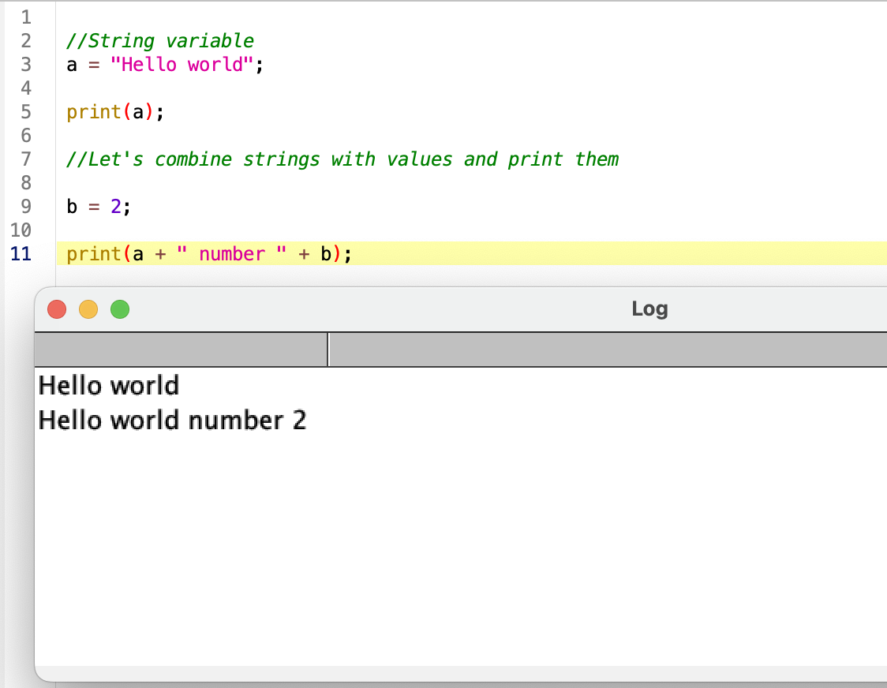

Macro programming in Fiji
Introduction to Macro Programming in Fiji
Fiji includes a built-in macro language that allows you to automate repetitive image-processing tasks, ensure reproducibility, and scale analyses to large datasets. Macros can record actions performed in the graphical user interface (GUI) and translate them into editable code, making them an excellent entry point into scripting.
This tutorial introduces the basics of working with macros in Fiji.
Learning Outcomes
By the end of this tutorial, participants will be able to:
- Use the Fiji Macro Editor and Macro Recorder to create and modify ImageJ macros.
- Build batch-processing macros to analyze large image datasets automatically.
- Design interactive macros that accept user-defined parameters via dialogs.
- Write clear, reusable macro code using variables, loops, and functions.
- Implement reproducible image-analysis workflows that can be shared and rerun.
- Adapt existing macros to new datasets and experimental conditions.
Basic Macro concepts
1. Opening the Macro Editor in Fiji
To write or edit macros in Fiji, you will use the Script Editor, which includes support for the ImageJ Macro language.
- Open Fiji.
- From the top menu bar, go to
File → New → Script…A new window will open. This is the Macro Editor, where you can write, edit, and run macro code. - From the top menu bar, go to
Language → ImageJ Macro
Once the editor is open, you can start writing macros or paste code generated by the Macro Recorder.
3. Colorcode and debugging
Macro code contains colorcoded text. Pink = strings Yellow = commands Green = comments
If something is off, likely you made a mistake in the code. And if so, when you run the code you’ll have a pop up window with a very broad description of what might have gone wrong and where (in general not very helpful).
4. The macro recorder
The life changing tool that will make you grow fond of Fiji. Go to Plugins → Macro → Record...
{kind=link}
Now everything we do will be “recorded” and we can turn it into reproducible image analysis pipelines that run automatically.
Reproducible and automatic pipeline
Now, with the recorder open we will create a Macro that changes automatically Brightness and contrast features of a multi channel image and creates a png figure with scale bar.
1. Open a Sample Image
- Open Fiji.
- From the menu bar, go to:
File → Open Samples → Fluorescent Cells
This will load a multichannel fluorescence image provided with Fiji.
2. Split the Image into Channels
- With the image window active, go to:
Image → Color → Split Channels
Fiji will create separate grayscale images for each fluorescence channel (e.g. C1, C2, C3).
3. Adjust Display Contrast for Each Channel
Adjust the display range of each channel individually.
- Go to:
Image → Adjust → Brightness/Contrast… - Change the minimum or maximum values. Do it arbitrarily, it’s just a test!
- Click Set or Apply.
- Repeat for the other channels
Note: These values affect only the display, not the underlying pixel data.
4. Merge Channels into a Composite Image
- Go to:
Image → Color → Merge Channels… - Click OK.
A merged multichannel image will be created.
5. Add a Scale Bar
- Select the merged image window.
- Go to:
Analyze → Tools → Scale Bar…Ideally, the scale bar will be in microns but in this sample image it will be in pixels. - Click OK.
6. Convert the Image to RGB
- With the merged image selected, go to:
Image → Type → RGB Color
This step is required before saving the image in common formats such as PNG.
7. Save the Final Image
- Go to:
File → Save As → PNG… - Choose a destination folder.
- Name the file (e.g.
FluorescentCells.png). - Click Save.
You have now manually completed the same workflow that will later be automated using a Fiji macro. Go to the recorder and click Create. Now let’s run it! You will obtain the same result of your manual pipeline and you can apply this to other images from the same experiment to compare visually using the same B&C parameters and get png images ready for publications.
{kind=link}
Note that the command run contains the instructions to run the specific functions in string format with a sintaxis that is very specific. Minor variations might occurr from MacOS/Ubuntu to Windows. Other commands such as saveAs include the specific title of the image we are processing, or directory where is being saved. We will pay attention to these when running the analysis in another image or directory.
8. Making the code general
Let’s asume we would like to run this code in an image we previously opened. We can then remove the first line of code that opens the sample image.
Next, the title of the opened image is being used throughout the code, it’s includded by default in the title of each channel after splitting, in the merge command and in the saveAs function. A good way to generalize the code is to create a variable with the title of the open image, whichever that is. For this wew use the function getTitle(). We can then replace VERY carefully, the title of the image by our variable.
Reaching the end of the code, we would like to have an interactive way to select the directory where the image will be saved. We can use the function getDirectory() to browse the folder we want and save that path as a variable to insert in the function. We usually would like to put this at the beginning of the code since it requires user input and if the analysis is long we would need to wait to select the saving directory. Now we can replace the dir and title variables in the saveAs function.
Test and save the macro.
{kind=link}
Final version of the code:
//This macro process a 3 channel image with stainings A, B and C. Adjusts B&C,
//Creates a png with scale bar and saves
//Marina Cuenca 2026
dir = getDirectory("Saving directory");
title = getTitle();
run("Split Channels");
selectImage("C1-" + title);
setMinAndMax(0, 182);
selectImage("C2-" + title);
setMinAndMax(0, 182);
selectImage("C3-" + title);
setMinAndMax(0, 157);
run("Merge Channels...", "c1=C1-" + title + " c2=C2-" + title + " c3=C3-" + title + " create");
run("Scale Bar...", "width=50 height=50 location=[Upper Right] bold overlay");
run("RGB Color");
saveAs("PNG", dir + "/" + title);Batch processing
Now we will build step by step a script to process images belonging to the same experiment stored in the same folder, from which we want to quantify morphology of the cells. We will have to automatically search what is inside the folder and loop through the contents, applying the pipeline to each image, storing the results, and closing the open windows before moving to the next image. This might sound overwheelming, but the strategy is to make it work for one image, generalize de code and then wrap it in a loop.
We will use the dataset in folder Drosophila-CartographicProjection (https://zenodo.org/records/18020241)
Building the code from the manual Workflow:
This section describes how to manually perform image segmentation and region-based morphometric analysis in Fiji, following the same steps that will later be automated using a macro.
Make sure the recorder is clear.
1. Open a single Image
- Open Fiji.
- Drop the file or Go to:
File → Open…and open one of the images in the folder. Any is fine.
2. Convert the Image to 8-bit
- Make sure the image window is active.
- Go to:
Image → Type → 8-bit
This step converts the image to 8-bit grayscale, which is required by many thresholding and segmentation algorithms.
3. Apply Local Thresholding
- With the image selected, go to:
Image → Adjust → Auto Local Threshold… - In the dialog, set:
- Method:
Otsu - Radius:
15 - Leave other parameters at their default values
- Method:
- Click OK
This will generate a binary image separating foreground objects from the background.
4. Label Connected Components
- With the thresholded (binary) image active, go to:
Plugins → MorphoLibJ → Binary Images → Connected Components Labeling - Set:
- Connectivity:
4 - Output type:
16 bits
- Connectivity:
- Click OK
Each connected object in the image will be assigned a unique label.
5. Remove Objects Touching the Image Borders
- Select the labeled image.
- Go to:
Plugins → MorphoLibJ → Label Images → Remove Border Labels - Ensure all borders are selected:
- Left
- Right
- Top
- Bottom
- Click OK
Objects touching the image borders will be removed from the label image.
6. Measure Morphometric Properties of Regions
- With the cleaned label image selected, go to:
Plugins → MorphoLibJ → Analyze → Analyze Regions - Select the following measurements:
- Area
- Perimeter
- Circularity
- Click OK
A Results table containing the selected morphometric measurements will appear.
7. Save the Results Table
- Click on the Results window.
- Go to:
File → Save As… - Save the table as a CSV file, for example:
Btd-cp000-Morphometry.csv*
8. Save the Labeled Image
- Select the labeled image window.
- Go to:
File → Save As → Tiff… - Save the image, for example as:
Btd-cp000-lbl-killBorders.tif
You have now manually completed a full workflow including image preprocessing, segmentation, object filtering, and quantitative morphometric analysis.
When clicking Create in the macro recorder, you will see a script like this:
{kind=link}
Edit the macro to make it general
The first line of code is to open the image, we will ignore this until the loop comes into place.
Let’s get the title of the image to generalize the rest of the code. This will need to happen once the image is open.
{kind=link}
Try the macro. As result we have several open windows we would like to close before opening the next image in the folder. For this, we will use the command close. We can specify the name of the window we want to close by close('name'), close the current selected window close or close everything close(*), which is what we want in this case. Sadly, the Result windows are special windows that do not respond to this command, we do have to specify its name.
{kind=link}
Try the macro again. As result we get the processing done and no image open. Data will be saved in whichever directory we specified at the beginning.
Wrap the code in a loop
1. Browse folder contents:
First we need to get the name of the source directory and get the file names inside. For this we will use the getDirectory and getFileList functions. I do recommend at this point to print the contents of the folder to make sure we are in the right place and for future debugging. We have to do this with a for loop, through all the values inside out file list:
`sourceDir = getDirectory(“Source directory”); //select where images are
fileList = getFileList(sourceDir); //list of files inside the sourceDir
for (i = 0; i < fileList.length; i++) { //fileList.lenght is an integer print(fileList[i]); //element i inside fileList (starts counting from 0) }`
{kind=link}
Run the macro.
2. Create output directory
Right now our log returns all the files inside the source directory, which now contains also the result of our analysis. It is best practice to create an Analysis folder, where data will be stored. In this way our raw data and our processed data remain separate. The easiest way is to create it ourselved by hand and use the getDirectory function, but you can also add an option in the code to create it if it does not exists already (safest).
outputDir = sourceDir + "/Analysis"; //name of the saving folder within the iamge containing folder if (!File.exists(outputDir)) { File.makeDirectory(outputDir); //creates folder if it does not exist already }
{kind=link}
3. Wrap the code and make it general :
Now let’s loop through the files ending with .tif and introduce the sourceDir, fileList and outputDir variables. Note that the fileName elements are identical to the titles, so we can change that variable.
{kind=link}
Run the code. At this point you should be seeing each image open individually, processing, and closing. In the Analysis folder you should get the output of the analysis.
If images are big and take time to open, we can activate BatchMode by includding the line of code setBatchmode(true) anywhere in the code (before looping through files and opening them).
The final version of the code is here:
//Opens individual 2D membrane images from Drosophila-CarographicProjections
//Segments, labels and quantifies area, perimeter and circularity of the cells
//Saves labels and csv file in Analysis folder
//Marina Cuenca 2026
sourceDir = getDirectory("Source directory"); //select where images are
fileList = getFileList(sourceDir); //list of files inside the sourceDir
for (i = 0; i < fileList.length; i++) { //fileList.lenght is an integer
print(fileList[i]); //element i inside fileList (starts counting from 0)
}
outputDir = sourceDir + "/Analysis"; //name of the saving folder within the iamge containing folder
if (!File.exists(outputDir)) {
File.makeDirectory(outputDir); //creates folder if it does not exist already
}
setBatchMode(true); //Won't show the images when open
for (i = 0; i < fileList.length; i++) { //Loop through images
title = fileList[i];
if (!endsWith(title, ".tif")) //only runs the code if file is an image .tif
continue;
open(sourceDir + "/" + title);
selectImage(title);
run("8-bit");
run("Auto Local Threshold", "method=Otsu radius=15 parameter_1=0 parameter_2=0");
run("Connected Components Labeling", "connectivity=4 type=[16 bits]");
run("Remove Border Labels", "left right top bottom");
run("Analyze Regions", "area perimeter circularity");
saveAs("Results", outputDir + "/" + title + "-Morphometry.csv");
saveAs("Tiff", outputDir + "/" + title + "-lbl-killBorders.tif");
close("*");
close( title + "-Morphometry.csv");
}
print("Done");
2. Comments, variables and strings
//."".print()